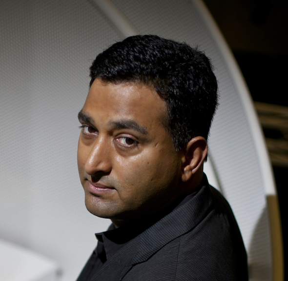
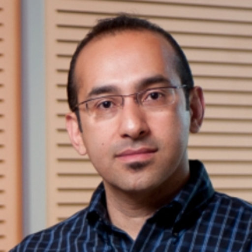
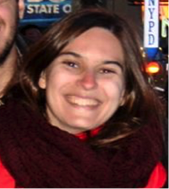

ISIC Skin Image Analysis Workshop
@ CVPR 2019
Hosted by the International Skin Imaging Collaboration (ISIC)
NEW: Proceedings are now posted to CVF. Some presentations available in schedule below.
Skin is the largest organ of the human body, and is the first area of assessment performed by any clinical staff when a patient is seen, as it delivers numerous insights into a patient’s underlying health. For example, cardiac function, liver function, immune function, and physical injuries can be assessed by examining the skin. In addition, dermatologic complaints are also among the most prevalent in primary care [1]. Images of the skin are the most easily captured form of medical image in healthcare, and the domain shares qualities to other standard computer vision datasets, serving as a natural bridge between standard computer vision tasks and medical applications.
This workshop will serve as a venue to facilitate advancements and knowledge dissemination in the field of skin image analysis, raising awareness and interest for these socially valuable tasks. Invited speakers include (confirmed) major influencers in computer vision and skin imaging, and authors of accepted papers.
Topics of manuscript submissions may include:
- Computer Vision Applied to Dermatology and Primary Care
- Skin Analysis from Dermoscopic Images
- Skin Analysis from Consumer-Grade Photographs
- Skin Analysis from Video
- Skin Analysis from Total-Body Photography and 3D Skin Reconstructions
- Skin Analysis from Confocal Microscopy
- Skin Analysis from Optical Coherence Tomography (OCT)
- Skin Analysis from Histopathological Images
- Skin Analysis from Multi-Modal Data Sources
- Interpretable or Explainable AI Related to Skin Image Analysis
- Algorithms to Mitigate Dataset Imbalance
- Uncertainty Estimation Related to Skin Image Analysis
- Application Workflows for Skin Image Analysis
- Robustness to Bias from Clinical and User-Originating Photography
- Best Paper Award: $4,000
- Honorable Mention: $2,000
In order to submit a paper, please refer to the following:
Paper Submissions System
(Author Information and Template)
[1] Lowell BA, et al. “Dermatology in primary care: Prevalence and patient disposition" In: Journal of the American Academy of Dermatology (JAAD), vol. 45, no. 2. 2001.
Invited Speakers
This workshop will feature several prominent names in the field of skin image analysis, including:
 |
Massachusetts Institute of Technology Associate Professor and head of the MIT Media Lab's Camera Culture research group. His research interests span the fields of computational photography, inverse problems in imaging, and human-computer interaction. |
| CEO of VisualDx. VisualDx is one of the largest online repositories of clinical photographs of skin diseases, and offers a range of services, including a clinical image reference app for mobile devices | |
 |
Professor of Computing Science at Simon Fraser University, Canada. His primary research is in medical image analysis and he is the director of the Medical Image Analysis Research Group. |
 |
Post-doctoral fellow in the Institute for Systems and Robotics (ISR) at Instituto Superior Técnico (IST), Portugal. She has been conducting research in dermoscopy image analysis since 2009. |
Important Dates
| April 2nd, 2019: | Workshop Paper Submission Deadline: 11:59 PM EDT |
| NEW: April 12th, 2019: | Author final notification |
| NEW: April 16th, 2019: | Camera-Ready Deadline |
| June 17th, 2019: | Workshop @ CVPR 2019, Monday Afternoon |
Paper Submission
For paper submissions, CVPR manuscript rules are followed. All papers will be indexed in CVF and IEEE Xplore, along with other CVPR 2019 papers.
Research Datasets for Skin Image Analysis
- ISIC 2018: According to the American Cancer Society, skin cancer is the most common form of cancer. While amenable to early detection by direct inspection, visual similarity with benign lesions makes the task difficult. Dermoscopic imaging was introduced to better visualize key details in skin lesions to improve diagnostic accuracy. The International Skin Imaging Collaboration (ISIC) has organized the world's largest repository of dermoscopic images of skin (over 23,000 images), to support research and development of methods for segmentation, clinical attribute detection, and disease classification. This dataset is a snapshot used for the 2018 challenge, containing over 10,000 images for training, and 1500 for testing. See also: Challenge Summary / Data Description
- SD-198: 6,584 consumer grade photographs of skin affected by 198 disease states. See also: Paper Reference / Author Website
- Derm7pt: Over 2,000 dermoscopic and clinical images of skin lesions, with 7-point checklist criteria and disease diagnosis annotated.
Program Schedule
Location: Monday, June 17th, 1:30-6pm, Hyatt Seaview B
| 1:30 PM: | Opening Remarks (Noel Codella) |
| 1:45 PM: | Invited Talk 1, Making The Invisible Visible: Inside, Around, and Beyond (Ramesh Raskar, covered by Guy Satat) [ Tutorial on data driven computational imaging] |
| 2:15 PM: | Invited Talk 2, Interpretability in CAD Systems for Skin Cancer Diagnosis (Catarina Barata) |
| 2:45 PM: | Invited Talk 3, Deep learning for skin image analysis: Beyond more data and faster GPUs (Ghassan Hamarneh) |
| 3:15 PM: | Coffee Break |
| 3:30 PM: | Invited Talk 4, A Machine Learning and Clinical Decision Support Approach to Broad Dermatologic Diagnosis (Art Papier) |
| 4:00 PM: |
Accepted Paper Presentation Session
Chairs: Emre Celebi, Noel Codella, Kristin Dana, Philipp Tschandl
|
Organizers
Sponsors:

Workshop Organizers:
- M. Emre Celebi Ph.D. (University of Central Arkansas, Arkansas, USA)
- Noel C. F. Codella Ph.D. (IBM Research, New York, USA)Twitter
- Kristin Dana Ph.D. (Rutgers University, New Jersey, USA)
- Allan Halpern M.D. (Memorial Sloan Kettering Cancer Center, New York, USA)
- Philipp Tschandl M.D. Ph.D. (Medical University of Vienna, Vienna, Austria)
Steering Committee:
- Rogerio Feris Ph.D. (IBM Research, New York, USA)
- Anthony Hoogs Ph.D. (Kitware, New York, USA)
- John R. Smith Ph.D. (IBM Research, New York, USA)
- Harald Kittler M.D. (Medical University of Vienna)